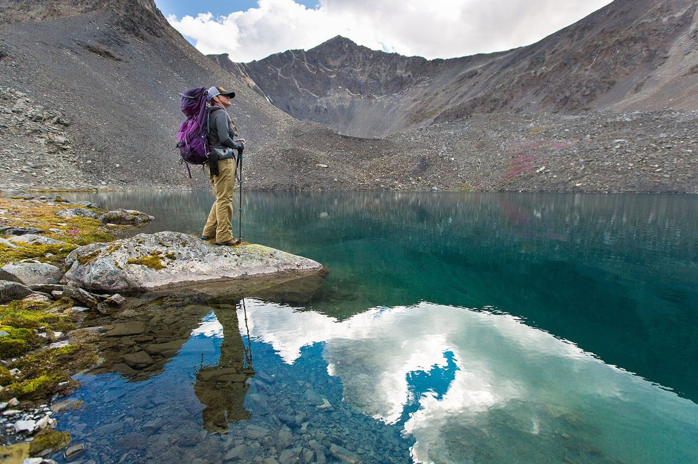

Alaska
A quiet lake near Bremner
No trail sign, no crowd, just a basin of gray rock and water so clear you can count the stones on the bottom.
Getting here took a bush plane, a long walk over loose scree and more patience than we thought we had. The reward was a lake that reflects the whole sky on a calm morning, with the mountains standing upside down in it.
Travel light, travel slow
Out here there's no one to call if a knee gives out. We moved slowly over the rocks, tested every step on the boulder fields and kept our packs light enough to balance.
Back at camp we boiled water, dried our socks on a warm rock and watched the clouds roll over the ridge. It was the best kind of quiet.